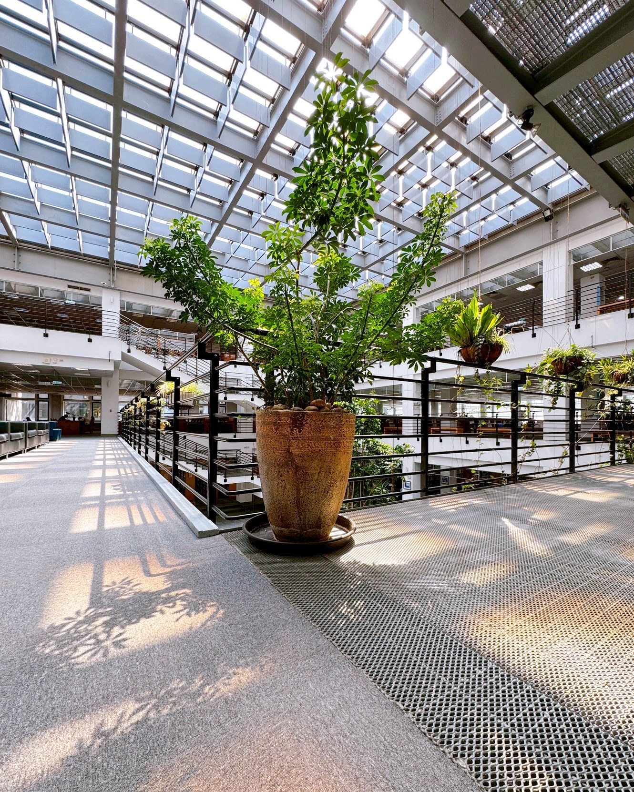

你有看過陽光灑落天井、植物在身邊搖曳的圖書館嗎？這一站讓我們在書與自然間呼吸一下。
水平方向層層退縮的階梯式建築，讓視線得以層層展開，中庭植栽錯落有致，像是光影與綠意共舞的舞台，不論站在哪個角度，眼前總有明亮與綠意交錯的風景。
空間敞亮、氣息流動，讓人不禁懷疑：自己是否走進了一座書香與自然共築的秘密花園。
這裡不只明亮，更是療癒。你可以站在欄杆邊靜靜觀賞，享受那種「這裡居然是圖書館」的驚喜。
但別待太久，因為下一站，我們要挑戰——邊運動邊閱讀！